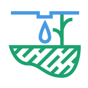

ABOUT US

How the System Works
Crop Disease Detection
We use machine learning models and artificial intelligence to predict whether a crop is diseased or not. What you need to do is just upload the picture of the crop you want to check the health of and the tool checks if anything's wrong with them. This way, farmers can quickly figure out what's going on with their crops and take action to keep them healthy.

Crop Disease Detection

Modern Techniques & Production
Modern Techniques & Production